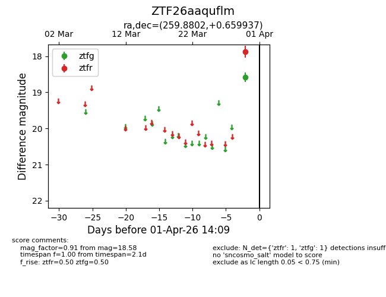
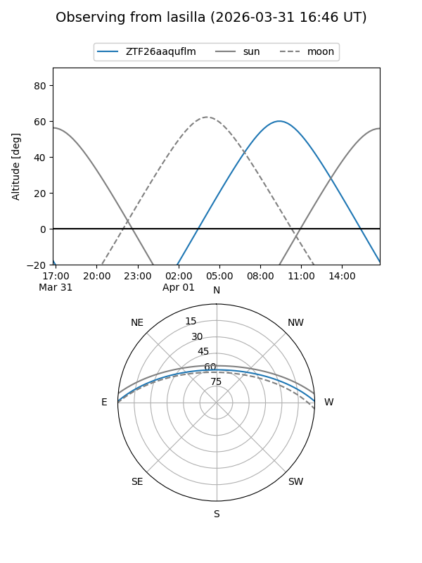
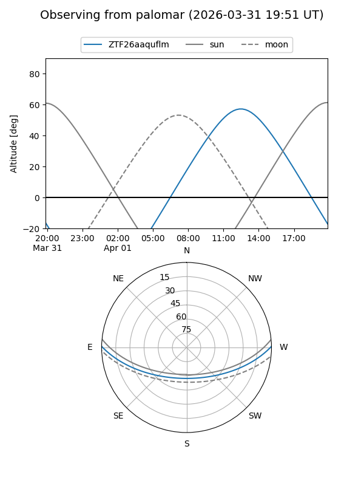

ZTF26aaquflm
Target ZTF26aaquflm at 2026-04-01 14:13
Aliases and brokers:
FINK: link
Lasair: link
ALeRCE: link
alt names
ZTF26aaquflm (ztf,fink_ztf)
Coordinates:
equatorial (ra, dec) = 259.8802,+0.65994
equatorial (HMS+DMS) = 17:19:31.24,+00:39:35.77
galactic (l, b) = (22.6046,+20.65127)
Flags:
Photometry:
last ztfg=18.58, ztfr=17.88
1 ztfg, 1 ztfr detections
Lightcurve

Visibility


Additional plots